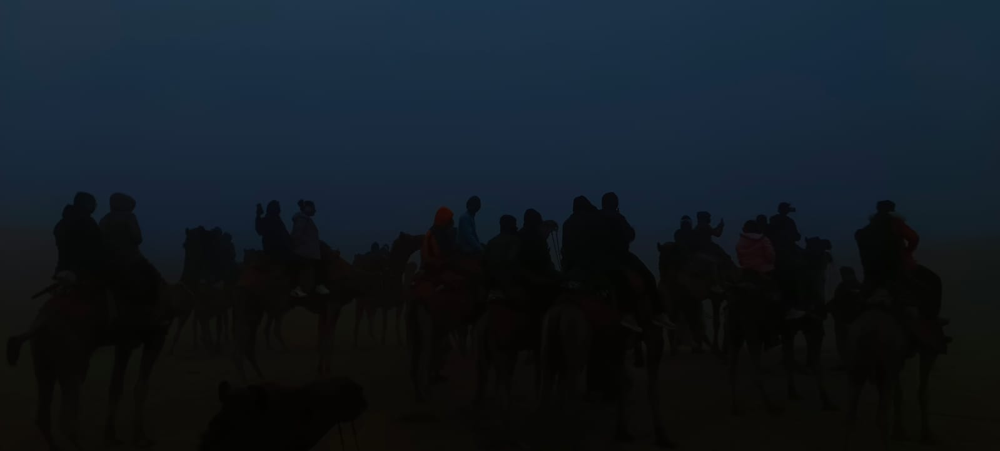
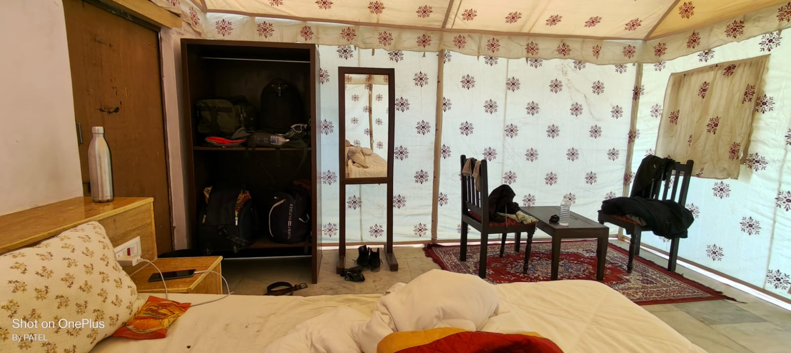

My Unforgettable College Trip to Jaisalmer

Traveling with friends during college days creates memories that last forever. One such unforgettable experience for me was my college trip to Jaisalmer, the Golden City of Rajasthan. It was my first visit to the desert, and the journey turned out to be far more exciting than I had imagined.
Our trip started early in the morning when we boarded the bus filled with excitement, music, and laughter. After a long journey, the first glimpse of Jaisalmer’s golden sandstone buildings instantly caught our attention. The city looked like it had come straight out of a history book.
The highlight of our trip was visiting Jaisalmer Fort, one of the few living forts in the world. Walking through its narrow lanes, seeing old houses, temples, and local shops gave us a true feel of Rajasthan’s rich culture. The sunset view from the fort was simply breathtaking.
Another memorable part of the trip was our visit to the Sam Sand Dunes. Riding camels across the vast desert was a completely new experience for most of us. In the evening, we enjoyed a cultural program with traditional Rajasthani music and dance under the open sky.
We also visited Patwon Ki Haveli and Gadisar Lake, where we relaxed and clicked countless photos. The calm atmosphere of Gadisar Lake was the perfect break from our busy college life.
What made this trip truly special was the time spent with friends. Sharing laughs, stories, and unforgettable moments strengthened our bond. This college trip to Jaisalmer will always remain close to my heart.